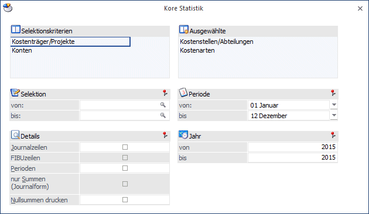
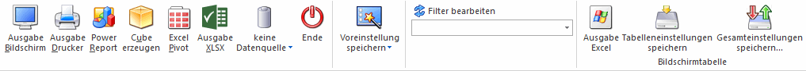
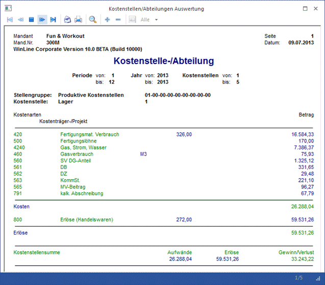
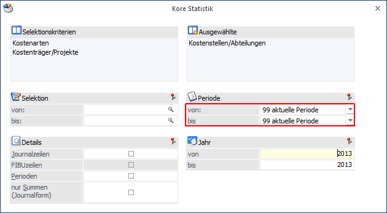

Die Kore Statistik wird im Menüpunkt
1 Auswertungen
1 Journal
oder Schnellaufruf
1 STRG + S
abgerufen.
In dieser Auswertung können Sie die Sortierung und den Informationsumfang der Ausgabe selbst definieren.

Ø Selektionskriterien
Zur Auswahl stehen alle
ü Kostenstellen
ü Kostenarten
ü Kostenträger
ü Konten
die Sie angelegt haben. Durch Anklicken (Doppelklick) mit der Maus wird der Informationsträger in das benachbarte Selektionsfenster geschoben. Durch die Reihenfolge, in der die Selektionskriterien in das rechte Auswahlfenster gestellt werden, entscheiden Sie selbst über die Reihenfolge der Sortierung (z. B. Kostenstellen nach Kostenarten).
Ø Ausgewählte
In diesem Auswahlfenster ist ersichtlich, in welcher Sortierung die Auswertung erfolgen wird. Steht z.B. an erster Stelle die Kostenstelle und danach die Kostenart, wird die Auswertung Kostenstellenblätter ausgegeben, auf denen alle gebuchten Kostenarten aufgelistet sind. Die Reihenfolge kann jederzeit mit Maus-Doppelklick verändert und neu gestaltet werden.
Ø Selektion von - bis
Selektieren Sie, welche Kostenstellen/Kostenarten/Kostenträger und welche Gruppen in die Auswertung einbezogen werden sollen. Die Selektion gilt jeweils für das oberste Sortierkriterium (=die oberste Position im Fenster "Ausgewählte").
Details
Ø Journalzeilen:
Ist diese Checkbox aktiviert, werden alle erfassten Journalzeilen pro Kostenart/Kostenstelle/Kostenträger angedruckt. Ist die Checkbox nicht aktiviert, werden nur Summenzeilen ausgegeben.
Ø Einheiten:
Erfasste Einheiten werden im Journalausdruck pro Journalzeile und pro Kostenart summiert ausgewiesen.
Ø FIBU Zeilen:
Ist diese Checkbox aktiviert, wird der Buchungssatz aus der Finanzbuchhaltung mit der Kontonummer und Bezeichnungen ausgegeben.
Ø Perioden:
Nach Aktivieren dieser Option werden pro Kostenstelle/Kostenart/Kostenträger auch die Periodensummen separat ausgewiesen.
Ø Periode / Jahr
Auswahl, welche Periode (für welches Jahr) ausgewertet werden soll (alle, von Monat - bis Monat, oder jedes Monat einzeln).
Ø Jahr von - bis
Hier kann ausgewählt werden ab welchem Wirtschaftsjahr, bis zu welchem Wirtschaftsjahr ausgewertet werden soll.
Ø Nur Summen (Journalform):
Für die Auswertung ermöglicht diese Option die reine Ausgabe von Summenzeilen mit den entsprechenden Zwischensummen für die einzelnen Gruppen. Diese Option steht nur zur Verfügung, wenn nur ein Bereich in das Fenster Ausgewählte übernommen wurde.
Ø Nullsummen drucken
Über diese Option werden bei der Ausgabe der KORE-Statistik ohne Journalzeilen Zwischensummen mit Saldo 0 ausgegeben.
Buttons

Ø Ausgabe Bildschirm
Mit Hilfe des Buttons "Ausgabe Bildschirm" oder der Taste F5 wird die Auswertung am Bildschirm ausgegeben. Es wird geprüft, ob der Benutzer die Berechtigung hat (WinLine KORE/Stammdaten/Kostenträger, -stellen, -arten), für die eingegebene Kostenart und Kostenstelle bzw. den Kostenträger.
Ø Ausgabe Drucker
Durch Anwahl des Buttons "Ausgabe Drucker" wird die Auswertung am Drucker ausgegeben. Es wird geprüft, ob der Benutzer die Berechtigung hat (WinLine KORE/Stammdaten/Kostenträger, -stellen, -arten), für die eingegebene Kostenart und Kostenstelle bzw. den Kostenträger.
Ø Power Report
Durch Drücken des Buttons "Power Report" wird die Auswertung auf Basis von Cube-Daten grafisch dargestellt. Die Ausgabe ist individuell anpassbar und erfolgt in der Form von "Widgets", die unterschiedlichsten Darstellungen ermöglichen.
Ø Cube erzeugen
Wenn die Option "Cube erzeugen" gewählt wird (nur möglich, wenn auch die entsprechende Lizenz dafür vorhanden ist), dann wird die Kore Statistik im "Olap Viewer" angezeigt. In diesem können die Daten nach verschiedenen Gesichtspunkten ausgewertet werden.
Ø Excel Pivot
Durch Anwahl des Buttons "Excel Pivot" werden die selektierten Zeilen in Form einer Pivot Ausgabe in Microsoft Excel (2007 oder höher) angezeigt. Für die Excel Pivot Ausgabe der Kore-Statistik können in der Applikation Info unter Office Vorlagen keine Excel Vorlagen definiert werden.
Ø Ausgabe XLSX
Mit Hilfe des Buttons "Ausgabe XLSX" werden die selektierten Artikelperiodenzeilen an Microsoft Excel übergeben.
Ø Datenquelle
Mit Hilfe dieser Auswahl kann definiert werden, ob und wie eine Datenquelle (d.h. ein Snapshot oder eine MasterView) verwendet werden soll.
ü Keine Datenquelle
Bei Auswahl
von "keine Datenquelle" wird keine zuvor angelegte Datenquelle genutzt. D.h. die
Daten werden von der WinLine "live" ermittelt und in der gewünschten Form
ausgegeben.
Hinweis
Da die BI-Ausgabe (z.B. Cube oder Power Report) immer eine Datenquelle benötigt, wird im Hintergrund eine temporäre Datenquelle (Snapshot) gebildet.
ü Datenquelle
erstellen/aktualisieren
Die Daten werden zur Laufzeit ermittelt und an einen
zu definierenden Snapshot übergeben. Nach dem Füllen der Datenquelle wird die
gewünschte Ausgabevariante über die Datenquelle erzeugt. Dieser Vorgang kann mit
einer Zeitverzögerung verbunden sein, da die Daten zusätzlich gespeichert werden
müssen.
ü Datenquelle verwenden
Bei der
Verwendung eines Snapshots werden die Daten direkt aus der Datenquelle gelesen,
d.h. die für die Ausgabe benötigten Daten können ohne Verzögerung in der
gewünschten Variante ausgegeben werden.
Wird hingegen eine MasterView
gewählt, so werden die Daten für die Ausgabe "live" ermittelt, wobei diese so
aktuell sind wie die zugrunde liegenden Datenquellen.
Hinweis
Der Button "Datenquelle verwenden" wird nur angeboten, wenn für diesen Bereich (bezogen auf den aktuellen Benutzer / Mandanten) zumindest eine private oder öffentliche Datenquelle existiert. Des Weiteren stehen nur die Ausgabevarianten "Power Report", "Cube erzeugen", "Excel Pivot" und "Ausgabe XLSX" zur Verfügung.
Hinweis
Weitere Informationen zum Thema "Datenquellen" entnehmen Sie bitte dem Kapitel "Die Datenquelle".
Ø Ende
Die ESC-Taste schließt das Fenster, alle ausgewählten Kriterien gehen verloren.
Ø Filter bearbeiten
Es gibt die Möglichkeit, einen sogenannten "Filter" zu definieren. Mit diesem Filter können zusätzliche Selektions- und Sortierkriterien hinterlegt werden. Die einzelnen Definitionen können auch fix mit einem eigenen Filternamen gespeichert werden.
Ø Tabelleneinstellungen speichern
Die Spalten einer Tabelle können grundsätzlich an beliebige Positionen verschoben, bzw. in der Breite entsprechend angepasst werden. Durch Anwahl des Buttons "Tabelleneinstellungen speichern" werden die Einstellungen benutzerspezifisch gespeichert und bei dem nächsten Aufruf des Programmpunktes wieder vorgeschlagen.
Ø Gesamteinstellungen speichern
Im Gegensatz zu "Tabelleneinstellungen speichern" können mit "Gesamteinstellungen speichern" mehrere Tabellenaufbauten gespeichert und nach Wunsch geladen werden. Zusätzlich werden Sonderfunktionen der Tabelle (z.B. "Spalte gruppieren") ebenfalls bei der Speicherung bedacht.
Beispiel
In untenstehender Auswertung wurde die Sortierung Kostenstellen / Kostenarten ausgewählt. Es erfolgte eine Einschränkung auf die Kostenstelle 1 bis 5 ohne Details der Journalzeilen für das gesamte Wirtschaftsjahr:

Besonderheiten beim Aufruf dieses Fensters aus dem Menüpunkt "Reportdefinition"

Ø Periode
In der Auswahllistbox steht auch der Eintrag "aktuelle Periode" zur Verfügung. Falls dieser Eintrag gewählt wurde, wird bei der Vorschau des Reports bzw. beim Erzeugen des Reports die Periode mit der Periode des aktuellen Systemdatums belegt.
Ø Ausdruck
Auf der letzten Seite der Ausgabe wird das Datum der Erstellung angedruckt.